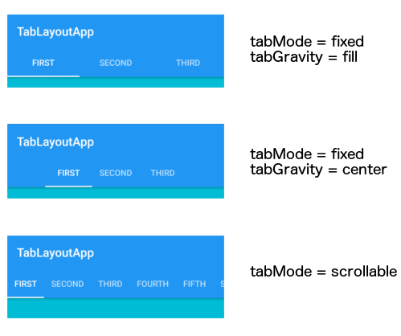
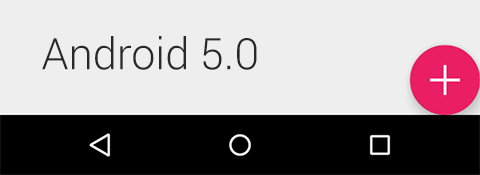
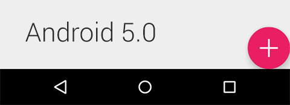

Material Design
MATERIAL BASICS: Theming (SDK 7+)
<style name="AppTheme" parent="Theme.AppCompat.Light">
<item name="colorPrimary">#424242</item>
<item name="colorAccent">#32a5ff</item>
...
<View
android:background="?colorPrimary"
...
public static int getThemeColor(Context context, int attributeId) {
TypedValue tv = new TypedValue();
context.getTheme().resolveAttribute(attributeId, tv, true);
return tv.data;
}
int primaryColor = getThemeColor(this, R.attr.colorPrimary);
MATERIAL BASICS: Ui tinting (SDK 7+)
// SDK 21+ only
<ImageView
android:tint="?colorAccent"
...
// SDK 21+
Drawable drawable = context.getResources.getDrawable(
R.drawable.background, context.getTheme());
drawable.setTint(primaryColor);
// below SDK 21
Drawable drawable = ContextCompat.getDrawable(context, R.drawable.background);
DrawableCompat.wrap(drawable).setTint(primaryColor);
// or
Drawable drawable = ContextCompat.getDrawable(context, R.drawable.background);
drawable.setColorFilter(primaryColor, PorterDuff.Mode.MERGE);
MATERIAL BASICS: Elevation (SDK 21+)

<View
android:elevation="8dp"
android:outlineProvider="bounds"
...
view.setElevation(8);
view.setOutlineProvider(ViewOutlineProvider.BOUNDS);
Design Support Library


Design Support Library
dependencies {
compile 'com.android.support:design:23.0.0'
...
- SDK 7+
- TabLayout
- TextInputLayout
- SnackBar
- FloatingActionButton
- NavigationView
- CoordinatorLayout
- AppBarLayout
- CollapsingToolbarLayout
android.support.design.widget.TabLayout

- classical tabbed indicator widget
- easy configuration
- no need to setup tabs or listeners
TabLayout tabLayout =
(TabLayout) findViewById(R.id.tabLayout);
tabLayout.setupWithViewPager(viewPager);
android.support.design.widget.TabLayout

<android.support.design.widget.TabLayout
xmlns:app="http://schemas.android.com/apk/res-auto"
app:tabGravity="fill"
app:tabMode="fixed"
...
android.support.design.widget.TextInputLayout


android.support.design.widget.TextInputLayout
<android.support.design.widget.TextInputLayout
android:hint="@string/hint_email"
app:hintTextAppearance="@style/TextAppearance.Design.Hint"
app:hintAnimationEnabled="true"
app:errorTextAppearance="@style/TextAppearance.Design.Error"
app:errorEnabled="true" ... >
<EditText ... />
</android.support.design.widget.TextInputLayout>
android.support.design.widget.
FloatingActionButton
- just like a ImageButton
- big & small
- gets tinted with colorAccent
<android.support.design.widget.FloatingActionButton
android:id="@+id/fabBtn"
android:layout_width="wrap_content"
android:layout_height="wrap_content"
android:layout_gravity="bottom|right"
android:src="@drawable/ic_plus"
app:fabSize="normal" />
android.support.design.widget.
FloatingActionButton
- supports elevation down to SDK 7 !!!
 

No offical SpeedDial
- Jimdo to the rescue(!?) ;)
- Soon to be open source...

android.support.design.
widget.SnackBar
- leightweight feedback
- can contain a Action

android.support.design.widget.SnackBar
- Toast like interface
Snackbar
.make(parentLayout, R.string.snackbar_text, Snackbar.LENGTH_LONG)
.setAction(R.string.snackbar_action, myOnClickListener)
.show(); // Don’t forget to show!
android.support.design.
widget.NavigationView
- to be used with DrawerLayout
- supports seperate header layout
- supports known menu inflation
android.support.design.widget.NavigationView
<android.support.v4.widget.DrawerLayout
android:fitsSystemWindows="true" ... >
<android.support.design.widget.NavigationView
xmlns:app="http://schemas.android.com/apk/res-auto"
android:id="@+id/navigation_view"
android:layout_width="wrap_content"
android:layout_height="match_parent"
android:layout_gravity="start"
app:headerLayout="@layout/layout_navigation_view_header"
app:menu="@menu/navigation_view_items" />
</android.support.v4.widget.DrawerLayout/>
android.support.design.widget.NavigationView
<menu xmlns:android="http://schemas.android.com/apk/res/android">
<group android:checkableBehavior="single">
<item
android:id="@+id/navigation_item_1"
android:checked="true"
android:icon="@drawable/ic_action_grade"
android:title="@string/navigation_item_1"/>
...
</group>
<item
android:id="@+id/navigation_subheader"
android:title="@string/navigation_subheader">
<menu>
<item
android:id="@+id/navigation_sub_item_1"
android:icon="@drawable/ic_action_grade"
android:title="@string/navigation_sub_item_1"/>
...
android.support.design.widget.NavigationView
public class NavigationViewActivity extends AppCompatActivity
implements NavigationView.OnNavigationItemSelectedListener {
@Override protected void onCreate(Bundle savedInstanceState) {
...
NavigationView nv = (NavigationView) findViewById(R.id.navigation_view);
nv.setNavigationItemSelectedListener(this);
}
@Override public boolean onNavigationItemSelected(MenuItem menuItem) {
menuItem.setChecked(true);
...
return true;
}
}
android.support.design.
widget.CoordinatorLayout
- FrameLayout with super powers!
- coordinate interaction between
children by using Behaviors - anchor views to each other

android.support.design.widget.CoordinatorLayout
- define which view depends on which and how to react when it changes
- a few available implementations:
- AppBarLayout.ScrollingViewBehavior
- SwipeDismissBehavior
- extend CoordinatorLayout.Behavior to build your own custom behaviors
android.support.design.
widget.AppBarLayout
- Helps implementing AppBar
related animations - scrolling widget must implement
NestedScrollingChild, f.e.:- RecyclerView
- NestedScrollView
android.support.design.widget.AppBarLayout
<android.support.design.widget.CoordinatorLayout
android:layout_width="match_parent"
android:layout_height="match_parent">
<android.support.v7.widget.RecyclerView
app:layout_behavior="@string/appbar_scrolling_view_behavior"
android:id="@+id/recyler_view" ... />
<android.support.design.widget.AppBarLayout
android:layout_height="wrap_content"
android:layout_width="match_parent">
<android.support.v7.widget.Toolbar
app:layout_scrollFlags="scroll|enterAlways" ... />
</android.support.design.widget.AppBarLayout>
</android.support.design.widget.CoordinatorLayout>
android.support.design.
widget.AppBarLayout
- enterAlways
- any downward scroll will make
the view become visible again - "Quick return pattern"
android.support.design.
widget.AppBarLayout
- enterAlwaysCollapsed
- only reexpand when scrolling view
has reached it's top

android.support.design.
widget.AppBarLayout
- exitUntilCollapsed
- scroll off until minHeight is reached

android.support.
design.widget.
CollapsingToolbarLayout
- to be used inside AppBarLayout
- wraps a Toolbar
- applies animations to it's children:
- title translation/scaling
- fading
- parallax scrolling

Examples
- official demo app by Google (Chris Banes)
- github.com/chrisbanes/cheesesquare
- Demo App by Patrice Müller (GDG Zürich)
- github.com/swissonid/android-design-support-lib-sample
References & Apprecistions
- Introducing the Android Design Support Library by Riccardo Ciovati (GDG Milano)
- goo.gl/VztkyW
- Android Developers blog post
- goo.gl/xgDTWh
- "Codelab for Android Design Support Library used in I/O Rewind Bangkok session" by nuuneoi (Android GDE)
- goo.gl/Oy6fyV
<Thanx!>